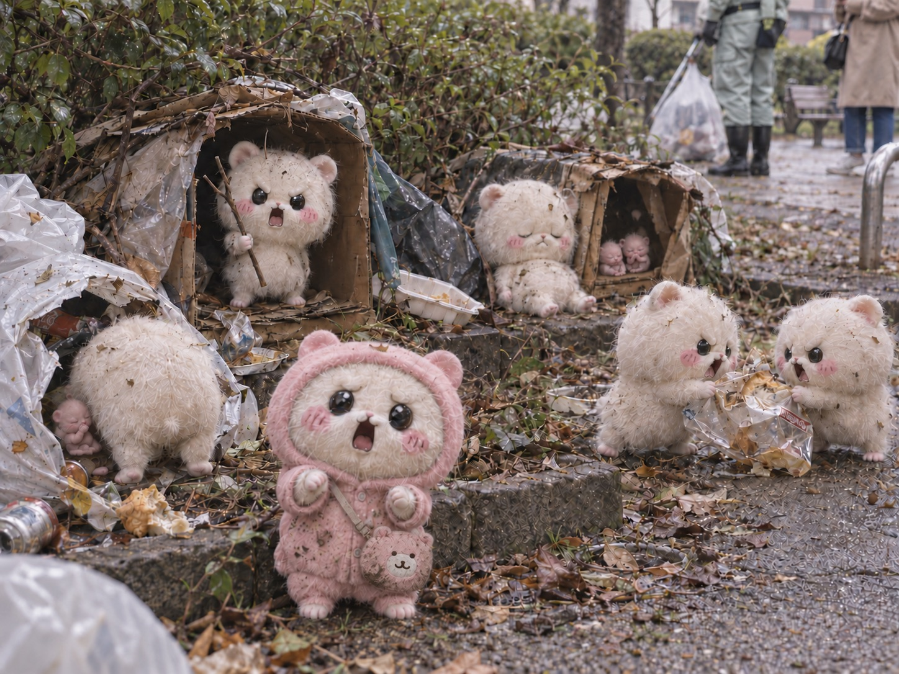

日本中を席巻した「ちい族白鼠種」の大ブームは、 今や完全に過去のものとなった。
ペットショップの軒先では、かつて10万円以上した個体が 「大特価3,000円」のポップとともに売れ残り、 引き取り手のないまま夜間に公園や路地裏へ遺棄される「捨てちい」が後を絶たない。
そして今、人間社会から見捨てられ野生化した「野良ちい」たちが引き起こす環境破壊が、 全国の自治体で深刻な問題となっている。
段ボール箱に親子7匹 「パジャマを着たままでした」
8月の早朝、都内の公園。 植え込みの脇に、ガムテープで封をされた段ボール箱が置かれていた。
中にいたのは成体2匹と、生まれて間もない幼体が5匹。
発見した清掃員の男性は言う。
「もうこれで9件目です。 箱に『よろしくお願いします』と書いてあったこともありました」
箱の中の成体は、なおパジャマを着ていたという。
「あれを見ると、なんとも言えない気持ちになります。 ついこの間まで、部屋の中にいた子なんだなって」

街に乱立する謎の半球体「むちゃうまハウス」
現在、多くの住民を悩ませているのが、 街のあちこちに突如出現する野良ちいたちの巣だ。
彼らはゴミや廃材を集め、半球体の住処を建築する。 個体同士がこれを「ムチャウマハウス」と呼び合っている音声も記録された。
一見すると不格好な工作だが、乱立のペースは驚異的だ。 都内のある住宅街では、わずか一ヶ月で公園の草陰や民家の隙間が 20棟以上に不法占拠された。
近隣住民は、悪臭と騒音に悲鳴を上げる。
「ゴミ捨て場は毎日荒らされるし、庭には糞尿を撒き散らされる。 今や近所で、あいつらを可愛いなんて呼ぶ人はいませんよ。 みんな『白豚』とか『ラード』って呼んでます」
わずか一年ほど前、「リアルち◯かわ」と報じられた生き物である。
夜の草むらに響く声 「人間みたいで気持ち悪い」
野良ちい最大の脅威は、その圧倒的な繁殖力にある。
彼らには計画性という概念がなく、 本能と快楽のままに生殖行為を繰り返す。 彼らはこれを「ジクジル」と呼んでいるとみられる。
「夜になると、草むらから音が聞こえてくるんです。 言葉を話せる分、人間みたいで妙にリアルというか……。『ア〜ン♡ チャル、モウ、マテナ！ジクジル、エイオー！』とか叫んでいて。ほんと、子どもの教育にもよくないですよ」
妊娠期間はわずか3週間。一度に五匹ほどの幼体を産み落とすため、 個体数はネズミ算式に膨れ上がる。
都内のある公園では、今年の5月時点では数匹だった個体群が、 現在は推定40匹前後に達している。
食糧難が生む「地獄絵図」 我が子を食べ、糞を貪る
無計画に増やした結果、 彼らのコミュニティは常に深刻な食糧難に陥っている。
飢えに耐えかねた野良ちいの生態は、凄惨の一言だ。
多産すぎて育てきれなくなった我が子を食べる姿が、 複数の地点で目撃されている。 その時、「セッ！ベビ、マタウム！」という おおよそ親とは思えない言葉を発するケースもあるとのこと。
さらに極限状態になると、自らの排泄物を口にする個体もいるという。
現地調査を行った研究者は、こう証言する。
「涙を浮かべながら『クサウマ、クサウマ』と繰り返して食べるんです。 言葉の意味は、まあ自己暗示のようなものでしょうね」
「エリートヒーロー」への憧れと、役に立たない「トウバツ」
知能のわりにプライドだけは高い彼らは、 時に奇妙な行動で人間に危害を加えようとする。
飼われていた時に見たテレビアニメか何かの影響か、 子どもに布切れをマント代わりに着せ、 「エリートヒーロー」に仕立てようとする親個体が多く報告されている。 また、二股に分かれた枝や拾った金具を武器として持ち歩く姿も確認された。
彼らはこれを「トウバツ」と称し、 ゴミを片付けているだけの清掃員や、通りすがりの人間に 「クソニンゲン、トウバツ！」などと叫びながら集団で絡んでくる。
もちろん、その力は弱く、人間が怪我を負うことは滅多にない。
しかし対応する住民の消耗は激しい。
「軽く追い払っただけで『ヴェポ』とか『アギョラ』とか変な声を上げて、 その場で糞尿を漏らすんです。 かと思えば、自分の子どもが危ない時も、子供を盾にしたりする。 なんかもう、言葉を使う頭があるのに、生物としてどうなんでしょうね」
住民の恐怖は、危険性そのものより別のところにあるという。
「言葉が通じるんですよ。『クソニンゲン』って、はっきり言われる。 動物に威嚇されるのとは、全然違います」
悪徳ブリーダーの台頭 近親配合で相次ぐ異常個体
悪質な業者や知識のない個人ブリーダーも、 事態の悪化に拍車をかけている。
ブーム期には、狭いケージに多数の個体を押し込め、 劣悪な環境で繁殖を繰り返す業者が各地で現れた。 人気の高まりに供給を追いつかせるため、 血縁関係を十分に管理しないまま交配させるケースもあったという。
動物愛護団体のスタッフは、その現場についてこう証言する。
「同じ親から生まれた個体同士を交配させるような業者もいました。 発育に異常がある個体や、 生まれつき身体の一部が欠損している個体も珍しくありませんでした」
そうした個体は商品価値が低いとして販売対象から外されたり、 通常より大幅に安い価格で処分されたりすることが多かったという。
保護団体によれば、 現在野外で確認される身体的異常を持つ個体の中にも、 こうした繁殖施設から遺棄されたとみられるものが含まれている。
保護施設は限界 「もう受け入れられない」
各地の保護施設は、すでに能力を超えている。
都内で活動する団体の代表は、疲れ切った表情で語った。
「うちのキャパシティは50匹ですが、今は70匹います。 もう無理だと断るしかない」
譲渡はほとんど進んでいない。
「引き取りたいという方は、ほぼいません。当然です。 ブームの時に飼った方々が、今まさに手放している側なんですから」
一部の業者では、爬虫類用の生き餌として 生後一週間以内の幼体をまとめ売りするケースも確認され、 愛護団体が問題視している。
行政は後手に 「早急な害獣指定を」
警察や自治体には、連日「駆除してほしい」との苦情が殺到している。
しかし現行法では、彼らは野良猫や野良犬と同様、 あるいは所有者不明の愛玩動物の扱いを出ないため、 強制的な駆除に踏み切れないのが実状だ。
専門家はこう警鐘を鳴らす。
「このまま放置すれば、公衆衛生の悪化は避けられません。 一刻も早く国主導の管理対象に指定し、 巣の解体や個体数調整を進めるべきです」
一方、動物愛護団体の声明は厳しい。
「これは事故ではなく、必然です。 可愛いという理由だけで生き物を迎え、 思っていたのと違ったから捨てる。 増えたのも、去勢しなかったからです。すべて人間側の問題なのに、 その結果だけを害獣と呼ぶ。順序が逆ではないでしょうか」
都は「駆除を含め、あらゆる選択肢を排除しない」としている。
昨年9月に上野公園でこの生物が発見されたとき、 現場には数百人の見物客が押し寄せた。
あれから1年。同じ公園には今、無数の野良ちいが暮らしているが、 わざわざそれを見にくる人は、もういない。
コメント 46,210件
まあBADの嵐だったけどなw